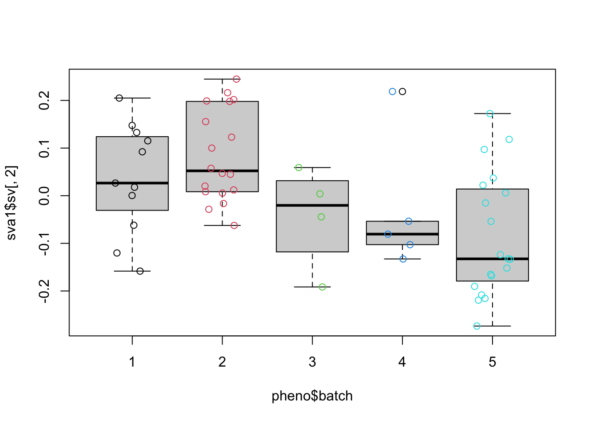

### Get the variable datapheno <-pData(bladderEset)head(pheno)
sample outcome batch cancer
GSM71019.CEL 1 Normal 3 Normal
GSM71020.CEL 2 Normal 2 Normal
GSM71021.CEL 3 Normal 2 Normal
GSM71022.CEL 4 Normal 3 Normal
GSM71023.CEL 5 Normal 3 Normal
GSM71024.CEL 6 Normal 3 Normal
Adjusting batch effect using Linerar model
mod <-model.matrix(~as.factor(cancer) +as.factor(batch), data = pheno)fit <-lm.fit(mod, t(edata))hist(fit$coefficients[2, ], col =4, breaks =100)
mod <-model.matrix(~cancer, data = pheno)mod0 <-model.matrix(~1, data = pheno)sva1 <-sva(edata, mod, mod0, n.sv =2)
Number of significant surrogate variables is: 2
Iteration (out of 5 ):1 2 3 4 5
summary(lm(sva1$sv ~ pheno$batch))
Response Y1 :
Call:
lm(formula = Y1 ~ pheno$batch)
Residuals:
Min 1Q Median 3Q Max
-0.26953 -0.11076 0.00787 0.10399 0.19069
Coefficients:
Estimate Std. Error t value Pr(>|t|)
(Intercept) -0.018470 0.038694 -0.477 0.635
pheno$batch 0.006051 0.011253 0.538 0.593
Residual standard error: 0.1345 on 55 degrees of freedom
Multiple R-squared: 0.00523, Adjusted R-squared: -0.01286
F-statistic: 0.2891 on 1 and 55 DF, p-value: 0.5929
Response Y2 :
Call:
lm(formula = Y2 ~ pheno$batch)
Residuals:
Min 1Q Median 3Q Max
-0.23973 -0.07467 -0.02157 0.08116 0.25629
Coefficients:
Estimate Std. Error t value Pr(>|t|)
(Intercept) 0.121112 0.034157 3.546 0.000808 ***
pheno$batch -0.039675 0.009933 -3.994 0.000194 ***
---
Signif. codes: 0 '***' 0.001 '**' 0.01 '*' 0.05 '.' 0.1 ' ' 1
Residual standard error: 0.1187 on 55 degrees of freedom
Multiple R-squared: 0.2248, Adjusted R-squared: 0.2107
F-statistic: 15.95 on 1 and 55 DF, p-value: 0.0001945
boxplot(sva1$sv[, 2] ~ pheno$batch)points(sva1$sv[, 2] ~jitter(as.numeric(pheno$batch)), col =as.numeric(pheno$batch))

### Add the surrogate variables to model matrix and perfom the model fitmodsv <-cbind(mod, sva1$sv)fitsv <-lm.fit(modsv, t(edata))### Compare the fit from surrogate variable analysis to the other twopar(mfrow=c(1,2))plot(fitsv$coefficients[2,],combat_fit$coefficients[2,],col=2,xlab="SVA",ylab="Combat",xlim=c(-5,5),ylim=c(-5,5))abline(c(0,1),col=1,lwd=3)plot(fitsv$coefficients[2,], fit$coefficients[2,],col=2,xlab="SVA",ylab="linear model",xlim=c(-5,5),ylim=c(-5,5))abline(c(0,1),col=1,lwd=3)